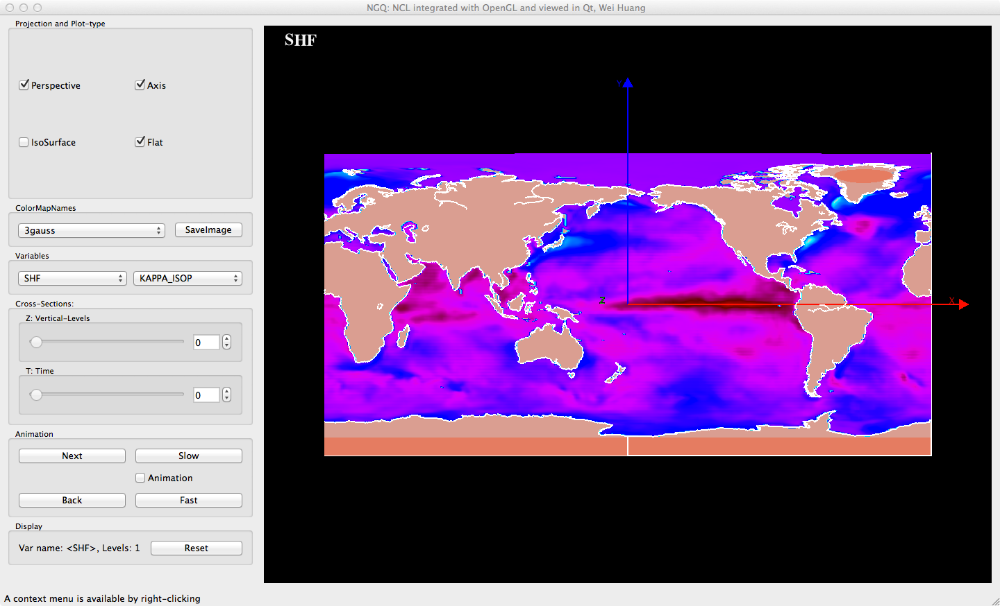
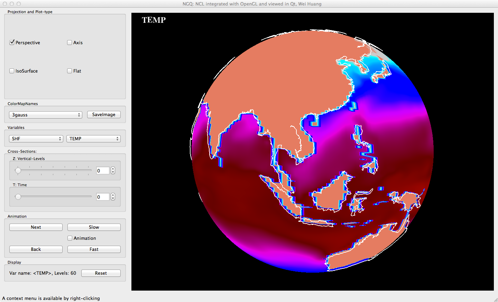
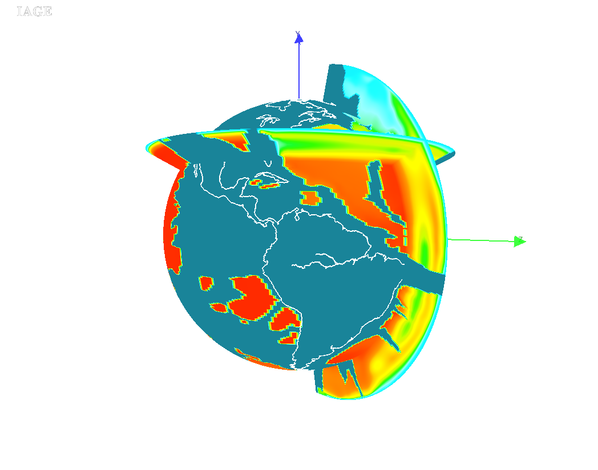
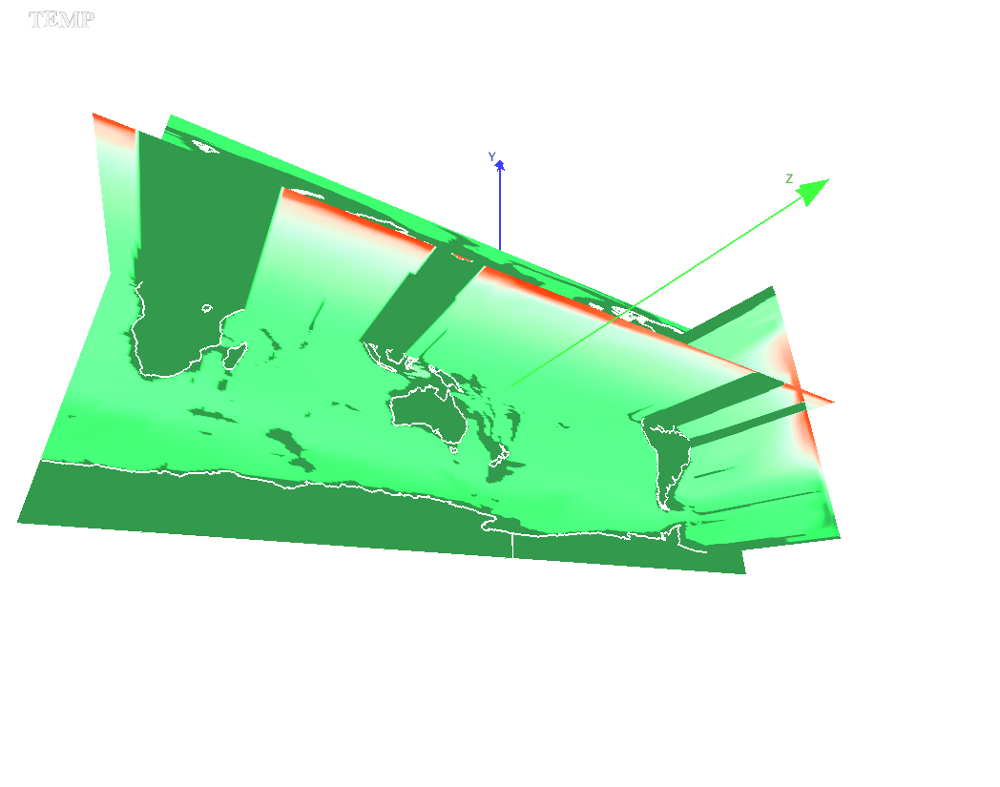

NV for POP
POP can only be visualized with OpenGL (for now).
Users may go to SITE
to learn how to plot POP data with NCL.
An image of POP SHF.

An image of POP TEMP

An image of POP IAGE on sphere.

An image of POP TEMP on plane.
